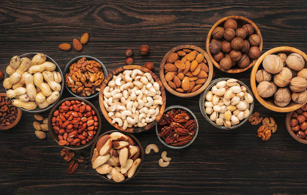
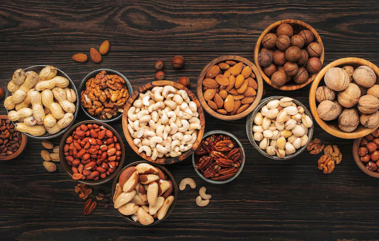

Make the special day even better with the perfect cake of your ultimate choice. Select one of our handmade specialties and enjoy with friends or family! Check out our event page!

 

Le cakery is built on organic ingredients, honest methods, and real care. We use natural, locally sourced ingredients with no artificial additives. Every cake is handmade to celebrate authentic flavour and genuine craftsmanship.